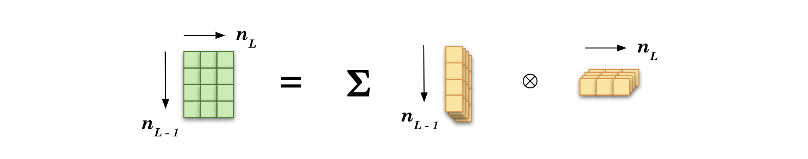
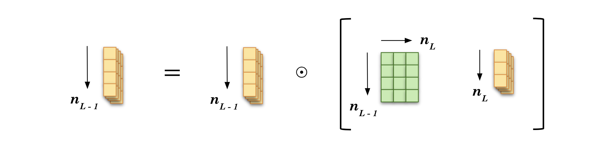
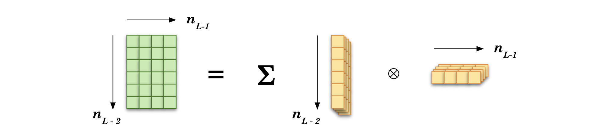

Backpropagation Algorithm
Contents
Backpropagation Algorithm#
Before Diving Into The Math#
Ingredients#
The forward propagation, or forward pass, will fill the network with values for all activation units. That includes the last layer of activation units, so the forward pass provides predictions.
We saw the loss function as the mathematical tool to compare the predictions with their associated observed values for a sample (and the cost function aggregates this for all data samples).
Then we are familiar with the gradient descent procedure, which gives at each iteration the positive or negative amount to correct the weights to eventually get a model that fits to the data.
For a neural network, there are lots of knobs to tweak! Luckily, an efficient technique called backpropagation is able to compute the gradient of the network’s error for every single model parameter.
Definition#
Definition 62
Backpropagation, short for backward propagation of errors, is an algorithm working from the output nodes to the input nodes of a neural network using the chain rule to compute how much each activation unit contributed to the overall error.
It automatically computes error gradients to then repeatedly adjust all weights and biases to reduce the overall error.
Chain Rule Refresher#
A little interlude and refresher of the chain rule will not hurt.
Definition 63
Let \(f\) and \(g\) be functions. For all \(𝑥\) in the domain of \(g\) for which \(g\) is differentiable at \(x\) and \(f\) is differentiable at \(g(x)\), the derivative of the composite function:
is given by
You can see above from the colouring that the inserted denominator and numerator of the composed function cancel out. All good. Now your turn with three functions (and that will be useful for the rest of the lecture).
Warning
The prime notation \(f'(\square)\) can be error-prone. It is the derivative with respect to \(\square\) as the variable, i.e. as a block on its own (even if it depends on other variables).
Exercise
What would be the chain rule for three functions?
Check your answer
Three functions: three derivative terms.
We work from the outside first, taking one derivative at a time.
Main Steps#
Before diving into a more mathematical writing, let’s just list the main steps of backpropagation. We will detail steps 2 and 3 very soon:
Algorithm 5 (Backpropagation)
Inputs
Training data set \(X\) of \(m\) samples with each \(n\) input features, associated with their targets \(y\)
Hyperparameters
Learning rate \(\alpha\)
Number of epochs \(N\)
Start
Step 0: Weight initialization
Step 1: Forward propagation:
\(\qquad \qquad \qquad \qquad \bullet\) get list of \(m\) predictions \(\boldsymbol{\hat{y}}^{(i)}\)
Step 2: Backpropagation:
\(\qquad \qquad \qquad \qquad \bullet\) get all errors \(\boldsymbol{\delta}^{(i, \: \ell)}\) using observations \(\boldsymbol{y}^{(i)} \\[2ex]\)
\(\qquad \qquad \qquad \qquad \bullet\) sum errors and get all cost derivatives:
Step 3: Gradient Descent steps to update weights & biases:
End of epoch, repeat step 1 - 3 until/unless:
Exit conditions:
Number of epochs \(N^\text{epoch}\) is reached
If all derivatives are zero or below a small threshold
Computations#
Now there will be math.
What is the goal?#
Always a good question to start. We want to tweak the weights \(\boldsymbol{W}\) and biases \(\boldsymbol{b}\) so that the network predictions \(\boldsymbol{\hat{y}}^{(i)}\) get as close as they can be to the observed values \(\boldsymbol{y}^{(i)}\). For all samples \(i\) of the training dataset. In other words, we want to know how to change the weights and biases so that we minimize the cost:
For this, we will need the partial derivatives of the cost function with respect to the parameters we want to optimize.
With derivatives, especially partial ones, it’s crucial to ask the question:
What varies here and with respect to what?
How will the numerator entity change as the denominator change?
Here we want to know how to vary the weights and biases so that the cost gets lower:
Warning
Most mathematical textbooks have \(x\) as the varying entity while explaining the derivative business. It can be here misleading with our notation as we use \(\boldsymbol{x}\) as well. But in our case, \(\boldsymbol{x}\) are the input features. They are given. They will not change (unless you bring new data, but there will still be given numbers you’re not supposed to tweak). What we want is to vary the weights \(\boldsymbol{W}\) and biases \(\boldsymbol{b}\) to find optimized values for which the error is minimum, i.e. the model predicts a \(\hat{y}\) as close as possible as the real target \(y\).
Equation (104) can be overwhelming, especially given the numerous quantities of weights and biases in a neural network. No panic! Thanks to backpropagation, there will be a way to not only get those derivatives, but also be very efficient in their computation.
Notations#
Let’s first rewrite the activation unit equation as a function of a function. We saw in the previous lecture:
with \(f\) the node’s activation function and \(\ell\) is the current layer of the activation unit. Let’s split the notation by extracting the sum:
This would be called the “weighted sum plus bias.” So then each activation unit can be computed as:
We will denote the loss function through a general form as \(L\):
It is computed for each sample instance \(\left\{ \boldsymbol{x}^{(i)}, \boldsymbol{y}^{(i)} \right\}\), with \(\left(\boldsymbol{x}^{(i)}\right)^\top = (x_1^{(i)}, x_2^{(i)}, \cdots, x_n^{(i)})^\top\) being the vector of \(n\) input features and \(\boldsymbol{y}^{(i)}\) the associated targets.
The cost is the sum of the losses over all data instances \(m\).
How can we express the final output \(\boldsymbol{\hat{y}}\)?
Let’s take a similar network as the one in the previous lecture but layers are labeled from the last one (right) in decreasing order:
{kind=link}
Fig. 48 . Feedforward neural network with the notations for the
last, before last and before before last layers.
Image from the author#
The final prediction \(\hat{y}^{(i)}\) is the output of the activation unit in the last layer:
In the network above, there is only one activation unit, so we can omit the subscript. If the network has \(K\) outputs instead of one, we would have column vectors of \(K\) elements:
So far, so good. Now the cost.
The cost function is obtained using Equations (107), (109) and (111):
There are three functions here: \(L \Bigl( \: f\bigl( \: z ( \:\boldsymbol{W, b} ) \bigl) \Bigl)\).
Let’s joyfully take the derivatives of that sandwich of functions! Now do you get the chain rule refresher?
We will use it, starting with the last layer and see how things simplify (yes, it will). Then we will backpropagate layer after layer.
The backward walk#
As its name indicates, the backward propagation proceeds from the last to the first input layer. Let’s write the derivative of the cost function with respect to the weight matrix of the last layer and apply the chain rule:
For now, the dot “\(\cdot\)” is ill-defined. We will write proper matrix products later. We can simplify things. The first term is the derivative of the loss function with argument \(f(\boldsymbol{z}^{(i, \: L)}) = \boldsymbol{a}^{(i, \: L)}\):
We have done the forward propagation, so we have access to the values for all the \(\boldsymbol{a}^{(i, \: L)}\). This term is known!
Same for the second term, which is the derivative of the activation function evaluated at \(\boldsymbol{z}^{(i, \: L)}\):
This is also known!
For the third term, let’s recall the definition of the \(z\) function in Equation (106).
With a bit of math, we can show that:
We actually know all these terms!
But how to combine them together properly?
Let’s first consider the dimensions of this product of three derivatives. What do we want? Looking at the left hand side of equation (113), the cost is a scalar and the weight matrix \(W^{(L)}\) is of shape \(n_{L-1} \times n_L\), where \(n_{L-1}\) and \(n_L\) are the number of nodes in the before-last and last layers respectively. Eventually, we will update each weight using the gradient descent method. So our term \(\frac{\partial \text { Cost }}{\partial \; W^{(L)}}\) should be of shape \(n_{L-1} \times n_L\) as well. With a bit of math, using the index notation, we can show that the product will be:
where \(\otimes\) is the outer product and \(\odot\) denotes the element-wise multiplication between the two column vectors. You can check the outer product will be of the desired dimensions of \(n_{L-1} \times n_L\).
Now let’s proceed to the before last layer.
Using the chain rule as usual:
The two first terms are identical as in Equation (113). For the remaining three terms, we can show using the definitions of \(\boldsymbol{a}\) and \(\boldsymbol{z}\):
How to properly multiply these matrix and vectors? Using again the index notation, we can reach with a bit of math this expression:
You can check yourself that for the derivative with respect to \(W^{(L-2)}\) we will have (scroll to the right, it’s lengthy):
Here the first four terms are the same as in Equation (118) but instead of the last term of Equation (118), \(\boldsymbol{a}^{(i, \: L-1)}\), we have three new terms, whose derivatives are obtained using again the definition of the \(z\) function in Equation (106).
Again with the index notations (and some math), we can work out the proper operations between these vector and matrix derivatives:
Can you start to see a pattern here? Compare the equation above with (120).
In the next section, we will write the terms with a much lighter notation to make this pattern more obvious.
Memoization (and it’s not a typo)#
This is a computer science term. It refers to an optimization technique to make computations faster, in particular by reusing previous calculations. This translates into storing intermediary results so that they are called again if needed, not recomputed. Recursive functions by definition reuse the outcomes of the previous iteration at the current one, so memoization is at play.
Let’s illustrate this point by writing the derivative equations for a network with three hidden layers. The output layer will be \(L = 4\). Let’s write the backpropagation terms.
Warning
In the following equations – for this section only – the sample index \(i\) is omitted for clarity. Only the layer number is shown in the upper-script. The dot operator “\(\cdot\)” is unspecified at this point. We will see later the proper matrix operations.
The reoccuring computations are highlighted in the same colour. Now you can get a sense of the genius behind neural network: although there are many computations, a lot of calculations are reused as we move backwards through the network. With proper memoization, the whole process can be very fast.
We will now write a general formula for backpropagation – you may have guessed it: it will be a recursive one!
Recursive error equations#
We can write Equations (117) and (120) by introducing an error term \(\boldsymbol{\delta}^{(i, \; \ell)}\). It will be of the same shape as the activation unit vector \(\boldsymbol{a}^{(i \; \ell)}\), that is to say \(n_\ell \times 1\). And at each node there will be different error values for each sample \(i\).
Error at the last layer
Let’s define \(\boldsymbol{\delta}^{(i, \; L)}\) as the product of the derivative of the loss and the activation function at the last layer (last two terms of Equation (117)):
{kind=link}
The schematic above illustrate the element-wise product done on the right hand side, where each term is a column vector of \(n_L\) elements. As we already use the left/right and up/down directions for matrix and vector operations, the sample index \(i\) is here the ‘depth’, represented by several piled up sheets, aka data samples (and only four for illustration purpose).
Derivative of the cost at the last layer
Looking at Equation (117), we will have:
In terms of dimensions, the outer product creates a \(n_{L-1} \times n_L\) matrix; this is what we want to get the correct dimensionality on the left hand side:
{kind=link}
Note that the derivatives of the cost on the left hand side – shown in green – are the result of the summation over the \(m\) samples so there is no ‘depth’ anymore.
Error at the before-last layer
From Equation (120), we inject the definition of \(\boldsymbol{\delta}^{(i, \; L)}\) and define the error at the before-last layer by adding the terms:
Dimension-wise, the matrix multiplication \(W^{(L)} \; \boldsymbol{\delta}^{(i, \; L)}\) leads to a column vector of \(n_{L-1}\) elements, which is then multiplied element-wise to give a column vector of, again, \(n_{L-1}\) elements.
{kind=link}
Derivative of the cost at the before-last layer
Moving on backward, we still use Equation (120) to express the derivative of the cost with respect to the weights of the before-last layer the following way:
And the outer product gives the proper dimensions for the left hand size, i.e. a \(n_{L-2} \times n_{L-1}\) matrix.
{kind=link}
General equations for errors and costs
We can generalize Equations (127) and (128).
Error at layer \(\ell\):
Derivative of the cost at layer \(\ell\):
This has become much simpler, hasn’t it?
What about the biases?
This is left as exercise for training.
Exercise
Express the partial derivatives of the cost with respect to the biases \(\boldsymbol{b}^{(\ell)}\).
Hint: start with the last layer \(L\) as done previously with the weights.
Check your answer
See the Summary section below.
Weights and biases update#
After backpropagating, each weight and each bias in the network are adjusted in proportion to how much they contribute to the overall error.
Nothing new here, it is the standard gradient descent step we are familiar with. There are just more elements to update.
Exercise
For a network of \(L\) layers, that is to say \(L -1\) hidden layers plus an output layer, how many weight matrices \(W^{(\ell)}\) and how many biases vectors \(\boldsymbol{b}^{(\ell)}\) do we have to update?
Let’s now wrap it up!
Summary on backpropagation#
The backpropagation of error is a recursive algorithm reusing the computations from last until first layer to compute how much each activation unit and bias node contribute to the overall error. The idea behind backpropagation is to share the repeated computations wherever possible. Let’s write again the steps with the key equations:
Algorithm 6 (Backpropagation)
Inputs
Training data set \(X\) of \(m\) samples with each \(n\) input features, associated with their targets \(\boldsymbol{y}\)
Hyperparameters
Learning rate \(\alpha\)
Number of epochs \(N\)
Start
Step 0: Weight initialization
Step 1: Forward propagation
\(\qquad \quad \bullet\) get list of \(m\) predictions \(\boldsymbol{\hat{y}}^{(i)}\)
Step 2: Backpropagation
\(\qquad \quad \bullet\) get the cost:
\(\qquad \quad \bullet\) get all errors:
\(\qquad \quad \bullet\) sum errors and get all cost derivatives:
Step 3: Gradient Descent
\(\qquad \quad \bullet\) update weights & biases:
End of epoch, repeat step 1 - 3 until/unless:
Exit conditions:
Number of epochs \(N^\text{epoch}\) is reached
If all derivatives are zero or below a small threshold
Now you know how neural networks are trained!
In the assignment, you will code yourself a small neural network from scratch. Don’t worry: it will be guided. In the next lecture, we will see a much more convenient way to build a neural network using dedicated libraries. We will introduce further optimization techniques specific to deep learning.
Exercise
Now that you know the backpropagation algorithm, a question regarding the neural network initialization: what if all weights are first set to the same value? (not zero, as we saw, but any other constant)
Check your answer
If the weights and biases are initialized to the same constant values \(w\) and \(b\), all activation units in a given layer will get the same signal \(a = f(\sum_{j} w_j \; x_j + b)\). As such, all nodes for that layer will be identical. Thus the gradients will be updated the same way. Despite having many neurons per layer, the network will act as if it had only one neuron per layer. Therefore, it is likely to fail to reproduce complex patterns from the data; it won’t be that smart. For a feedforward neural network to work, there should be an asymmetric configuration for it to use each activation unit uniquely. This is why weights and biases should be initalized with random value to break the symmetry.
Learn more
The paper that popularized backpropagation, back in 1989:
D. Rumelhart, G. Hinton and R.Williams, Learning representations by back-propagating errors
Some good refresher:
Derivative of the chain rule on math.libretexts.org
Backpropagation explanation with different notation and a source of inspiration (thanks) from ml-cheatsheet